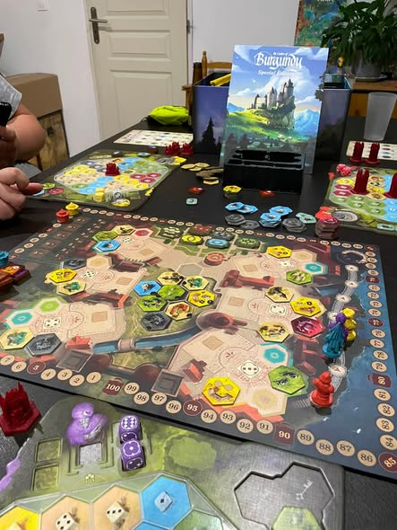
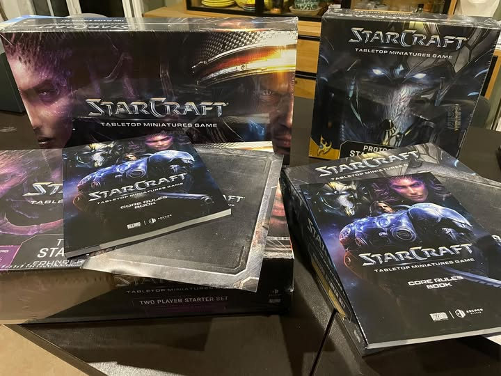
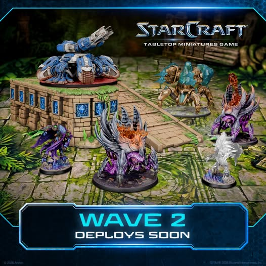

7 août 2026
Mairie de Vailhauquès 3 j · MATINÉE DES ASSOCIATIONS …
jeux de société
Mairie de Vailhauquès 3 j · MATINÉE DES ASSOCIATIONS …
Lire l'articleLa vie du club
Chaque carte donne assez d’informations pour comprendre le sujet avant d’ouvrir l’article. La publication Facebook originale reste accessible en fin de page.
7 août 2026
jeux de société
Mairie de Vailhauquès 3 j · MATINÉE DES ASSOCIATIONS …
Lire l'article6 août 2026
jeux de société
Mairie de Vailhauquès 1 j · MATINÉE DES ASSOCIATIONS …
Lire l'article
4 août 2026
jeux de société
Bien que fermés pour période estivale, ça ne nous empêche pas de nous retrouver pour jouer !…
Lire l'article
2 août 2026
StarCraft Tabletop · jeux de société
La seconde vague est déjà là !!! Et on a le tank de siège !!! Unité emblématique de StarCraft !… En StarCraft: Tabletop Miniatures Game 2 j · The battlefield is changing. En de commentaires Tableraze Montpellier Annoncer la seconde de vague alors que les boutique n'ont meme pas reçu la premiere vague... 1 j Auteur Le Cercle des Joueurs Paresseux Tableraze Montpellier ah c est sur, on a commencé à recevoir les boites hier en France à priori. Mais la feuille de route est connue depuis le début ! Et bon au final plus de 96k boîtes vendues contre 10k estimés, c est qu il va y avoir des joueurs ! Enfin j espère ! 19 h 1 de réponses
Lire l'article2 août 2026
jeux de société
Le Cercle des Joueurs Paresseux possède désormais son propre site Internet. Cette nouvelle vitrine rassemble les jeux pratiqués, le fonctionnement du club et les informations utiles pour venir jouer à Vailhauquès. Les visiteurs peuvent y découvrir les activités autour des jeux de société, des jeux de cartes et des jeux de figurines, puis repérer facilement les pages qui correspondent à leurs envies. Le site complète la page Facebook : il conserve une présentation structurée et durable, tandis que le réseau social reste le lieu des publications originales et des échanges. Cette mise en ligne améliore donc à la fois l’information des futurs joueurs et la visibilité locale du Cercle.
Lire l'article
1 août 2026
StarCraft Tabletop · jeux de société
Une bonne nouvelle arrivant jamais seule … on a enfin reçu nos préco de Starcraft !!…
Lire l'article
31 juillet 2026
StarCraft Tabletop · jeux de société
La seconde vague est déjà là !!! Et on a le tank de siège !!! Unité emblématique de StarCraft !… En StarCraft: Tabletop Miniatures Game 11 h · The battlefield is changing.
Lire l'article27 juillet 2026
jeux de société
Le Cercle des Joueurs Paresseux possède désormais son propre site Internet. Cette nouvelle vitrine rassemble les jeux pratiqués, le fonctionnement du club et les informations utiles pour venir jouer à Vailhauquès. Les visiteurs peuvent y découvrir les activités autour des jeux de société, des jeux de cartes et des jeux de figurines, puis repérer facilement les pages qui correspondent à leurs envies. Le site complète la page Facebook : il conserve une présentation structurée et durable, tandis que le réseau social reste le lieu des publications originales et des échanges. Cette mise en ligne améliore donc à la fois l’information des futurs joueurs et la visibilité locale du Cercle.
Lire l'article
23 juillet 2026
jeux de société
Le Cercle des Joueurs Paresseux a renouvelé sa photo de couverture afin de mieux identifier le club et son univers. Ce nouveau visuel accompagne désormais sa communication et rassemble, dans une même image, les différentes pratiques proposées : jeux de société, jeux de cartes et jeux de figurines. Il sert de repère aux joueurs de Vailhauquès et des environs qui découvrent les activités du Cercle. Cette mise à jour contribue aussi à rendre plus cohérente la présentation du club entre son site Internet et sa page Facebook. L’article explique le rôle de cette nouvelle identité visuelle et renvoie vers la publication originale pour voir l’image dans son contexte.
Lire l'article